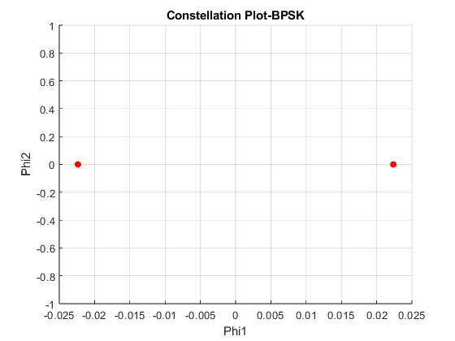
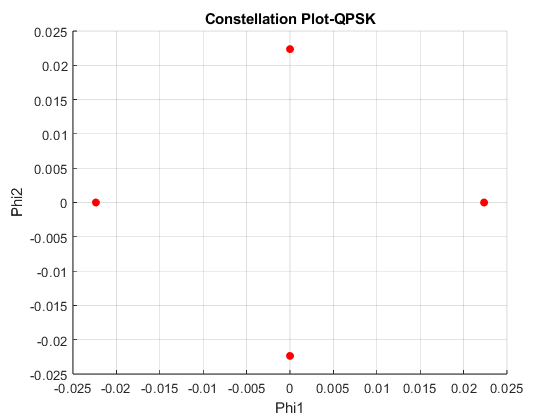
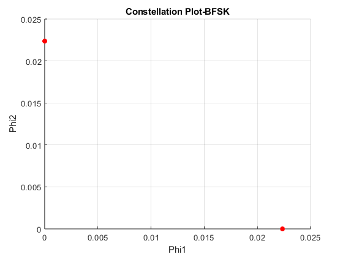

clc;
clear all;
close all;
syms t;
x=[];y=[];
fc=5000;
Ts=0.001;
A=1;
M1=2;
M2=4;
bit_seq=[];
for i=1:4
if rand < 0.5
bit_seq=[bit_seq 0];
else
bit_seq=[bit_seq 1];
end
end
for i=1:M1
x=[x ((A*sqrt(Ts/2)*cos(2*pi*(i-1)/M1)))];
y=[y ((A*sqrt(Ts/2))*round(sin(2*pi*(i-1)/M1)))];
end
figure(1);
scatter(x,y,'r','filled');
xlabel('Phi1');
ylabel('Phi2');
title('Constellation Plot-BPSK');
grid on;
x=[];y=[];
for i=1:M2
x=[x ((A*sqrt(Ts/2)*(cos(2*pi*(i-1)/M2))))];
y=[y ((A*sqrt(Ts/2))*round(sin(2*pi*(i-1)/M2)))];
end
figure(2);
scatter(x,y,'r','filled');
xlabel('Phi1');
ylabel('Phi2');
title('Constellation Plot-QPSK');
grid on;
x=[];y=[];
f_high=fc+(fc/4);
f_low=fc-(fc/4);
s1=cos(2*pi*f_high*t);
s2=cos(2*pi*f_low*t);
x=zeros(1:2);
y=zeros(1:2);
x(1)=calc_norm(s1,0,Ts);
y(2)=calc_norm(s1,0,Ts);
figure(3);
scatter(x,y,'r','filled');
xlabel('Phi1');
ylabel('Phi2');
title('Constellation Plot-BFSK');
grid on;
function norm=calc_norm(s,t_low,t_high)
norm=sqrt(int(s*s,t_low,t_high));
end
  